Lou Schlessinger
Machine Learning Engineer & Researcher
About
I'm Louis ("Lou") Schlessinger, a machine learning engineer and researcher interested in mathematical reasoning, spatial cognition, and neuro-inspired AI. I currently work on projects exploring how intelligent systems learn, reason, and build internal representations of the world.
A few things about me: I led the team that placed runner-up for the 2023 Vesuvius Challenge Grand Prize, presented work on automated model search at the NeurIPS Meta-Learning workshop, and have built large-scale multimodal ML systems in production. I hold B.S. and M.S. degrees in computer science from Washington University in St. Louis.
Research
Vesuvius Challenge Patch Aggregation Analysis A report on patch aggregation methods in ink detection for the Vesuvius Challenge. Awarded August, 2024 Progress Prize.
")
Vesuvius Challenge Grand Prize (runner-up) A method to detect ink in carbonized micro-CT scans of the Herculaneum Papyri. Awarded runner-up in the 2023 Grand Prize.
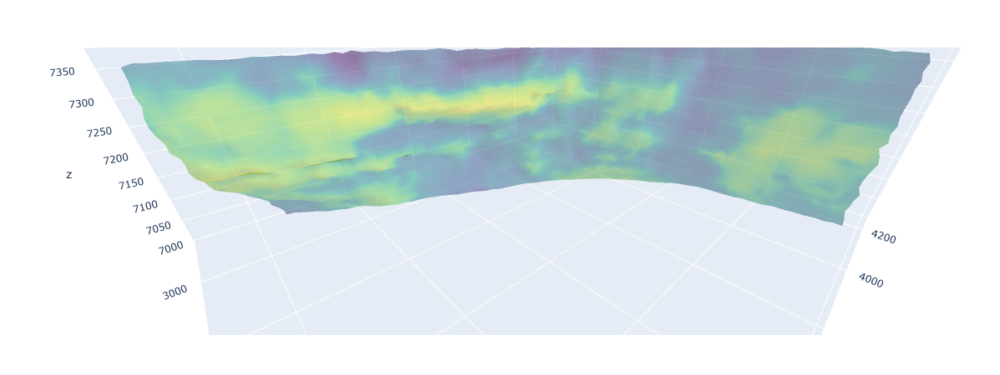
Vesuvius topogeo A topological and geometric analysis comparing and contrasting scrolls and fragments from the Vesuvius Challenge to better understand domain differences.
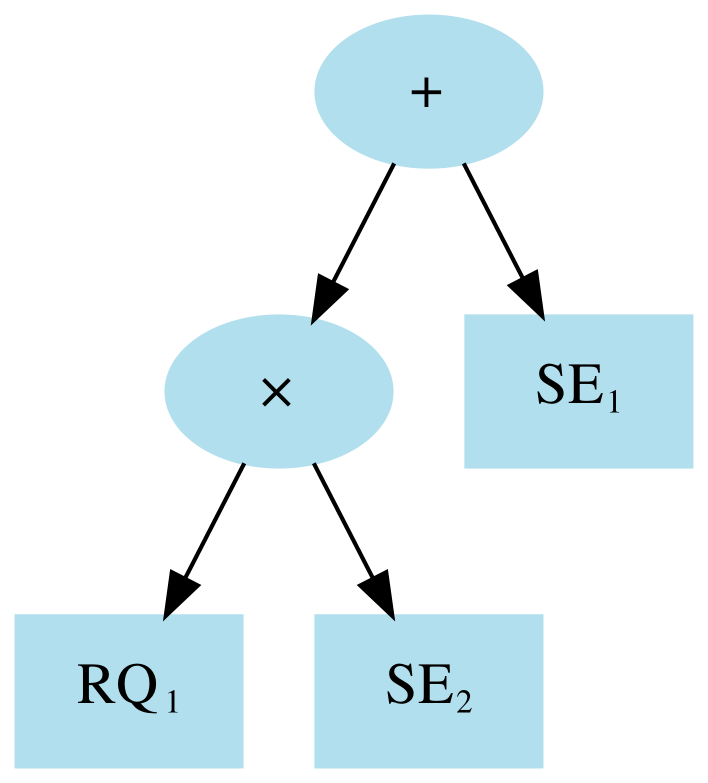
Automated Model Search Using Bayesian Optimization and Genetic Programming Presented at the 3rd Workshop on Meta-Learning at NeurIPS 2019, Vancouver, Canada.
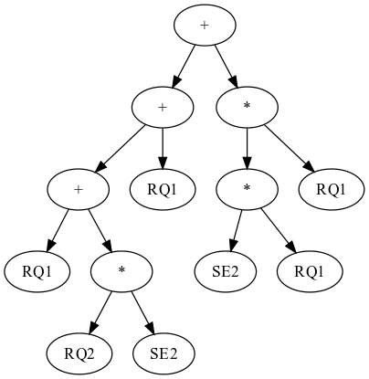
Automated Kernel Search using Evolutionary Algorithms Master's Project, Washington University in St. Louis, May 2019.
Projects
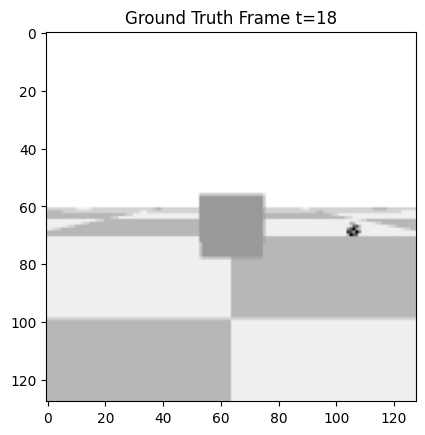
Occlusion evaluation Simple experiments for creating occlusions in PyBullet and testing video prediction models like PredRNN.
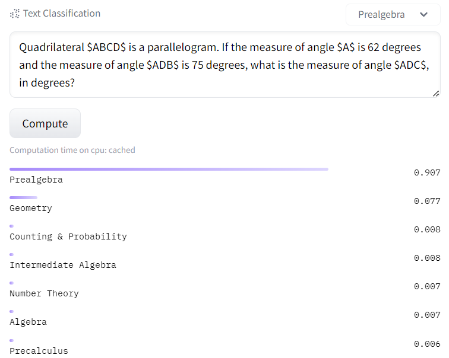
Math Problem Classification A model to classify the category of a math problem. A fine-tuned version of bert-base-uncased on a subset of the MATH dataset.
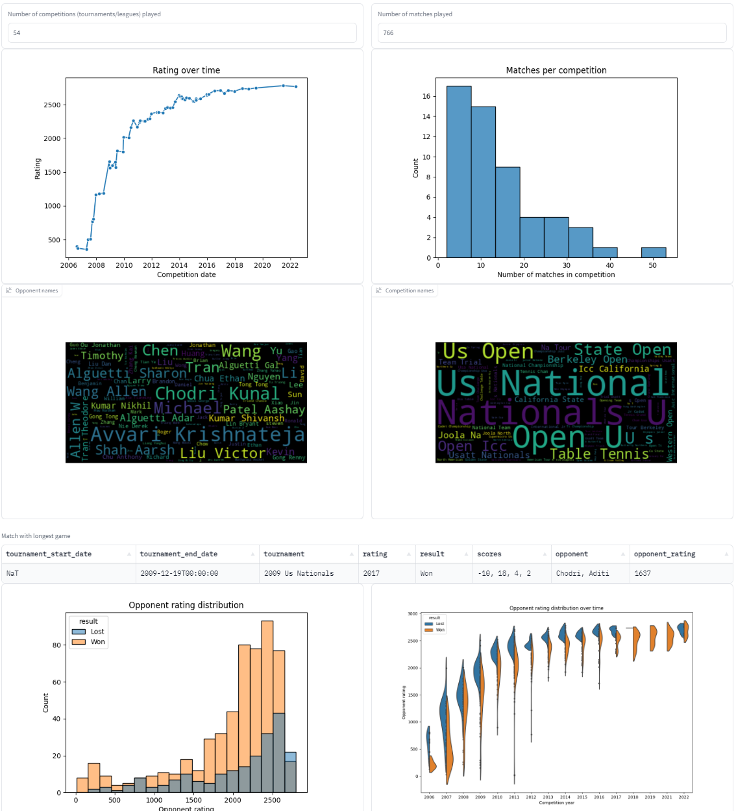
USATT Rating Analyzer A Gradio web app that helps analyze USA Table Tennis (USATT) tournament and league results by providing basic statistics and performance visualizations over time.
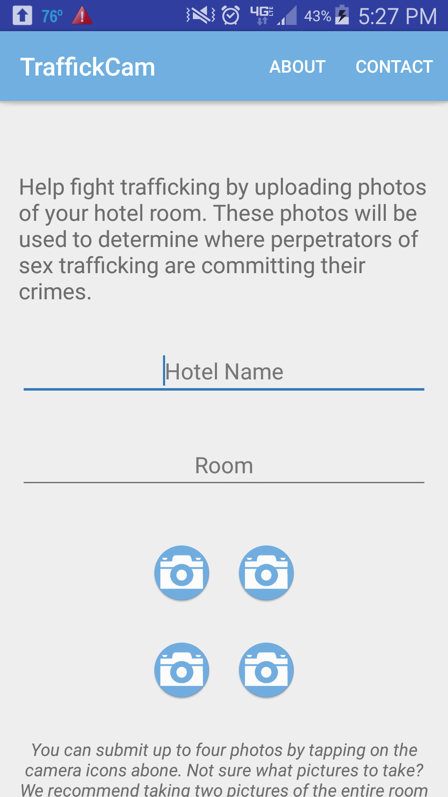
TraffickCam Android App An app to help combat sex trafficking by allowing users to upload photos of hotel rooms they stay in. Developed for the Media and Machines Lab at Washington University in St. Louis.
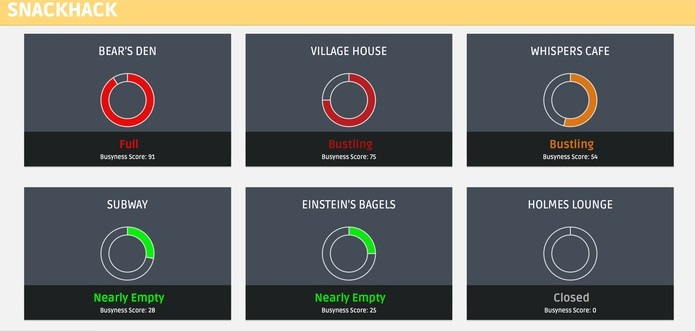
SnackHack A web service and Android app that leverages Twitter's Geolocation API and WashU network data to provide real-time information on restaurant crowd levels on campus.
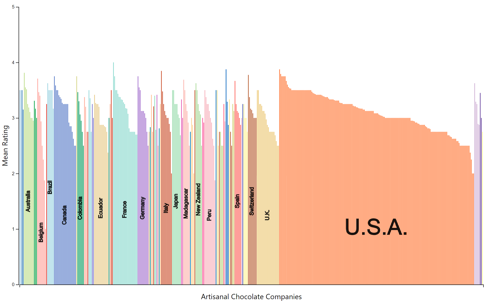
Artisanal Chocolate Exploration A D3 visualization of artisanal chocolate companies and ratings using expert review data from the Manhattan Chocolate Society.
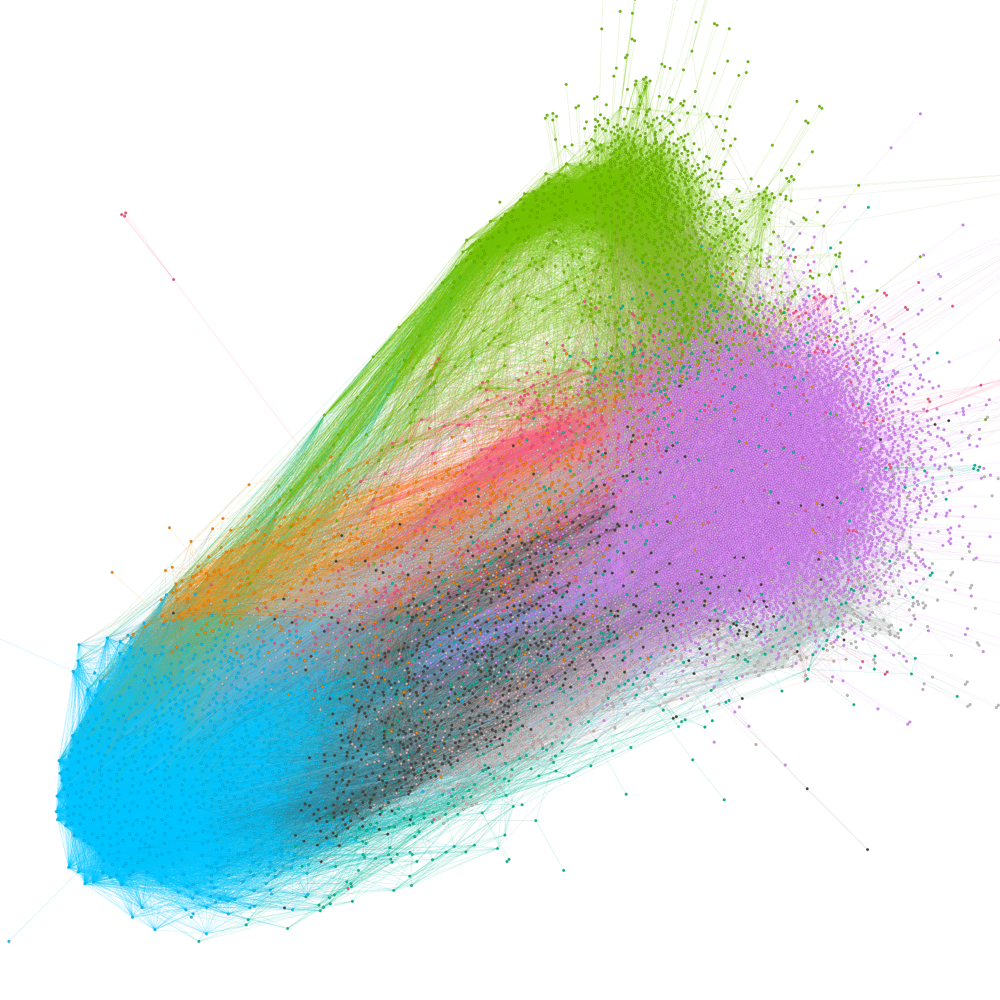
Reddit Community Detection A survey of community detection algorithms on Reddit data, based on the paper 'Detection and Analysis of Subreddit Communities'.
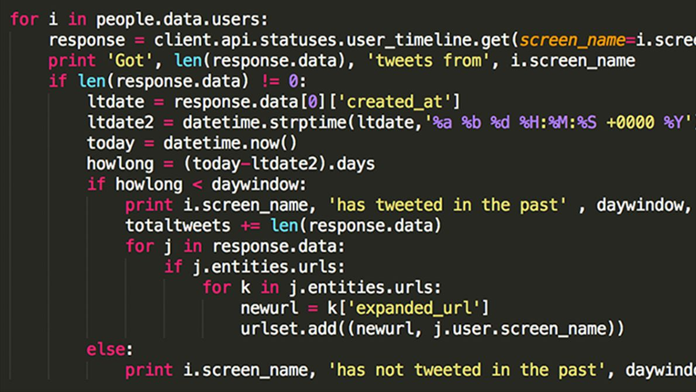
Algorithms A collection of algorithms implemented in various languages, covering topics from machine learning to multi-agent systems, including AdaBoost, neural networks, and the auction algorithm.
Bayesian Stock Price Prediction An evaluation of stock price prediction algorithms using analyst ratings.
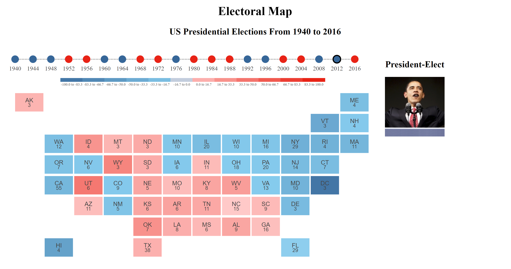
Electoral Map A D3 cartogram of U.S. presidential elections ranging from 1940 to 2016.
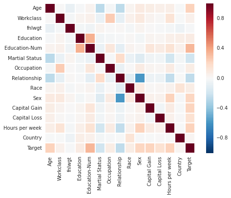
Income Prediction An evaluation of several machine learning methods applied to the Adult Data Set to predict income.
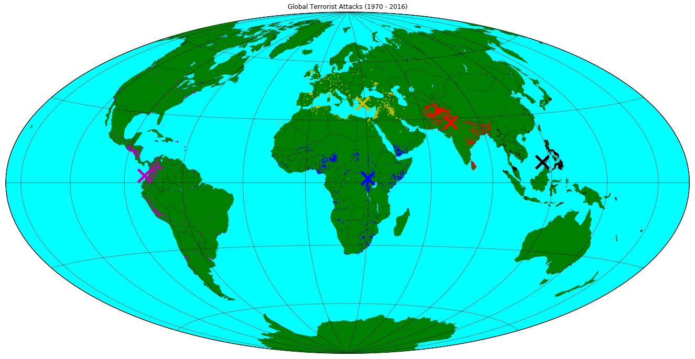
Global Terrorism Geo-Clustering in Spark A visualization of k-means clustering on terrorist attack locations using PySpark. Dataset contains 170,000+ terrorist attacks worldwide from 1970 to 2016.
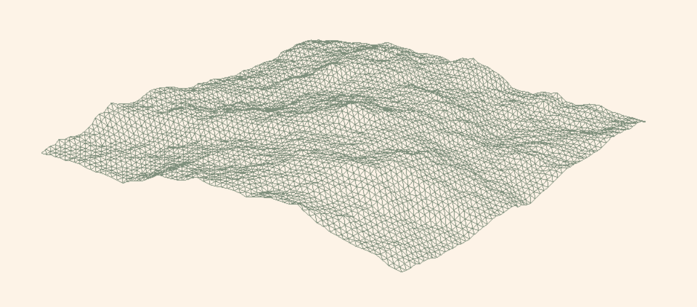
Procedural Terrain Generation A WebGL rendering implementation of a terrain generator based on a 3D-projected terrain map. Uses the Diamond Square Algorithm to procedurally generate terrain.

Image Quilting An implementation of 'Image Quilting for Texture Synthesis and Transfer' (Elfros & Freeman, 2001).